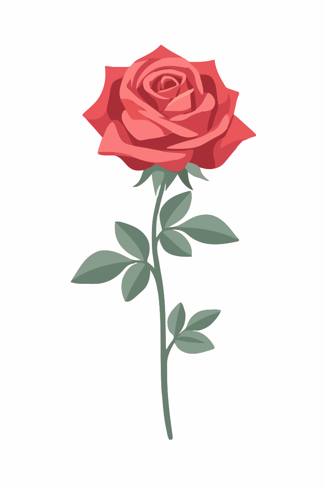

FlowerDom

Задача
Создать лого для цветочного магазина
Инструменты
Figma, TensorArt,,Inskape,vectorizer kivi
01 / Процесс разработки

Сгенерированная основа
Базовое изображение розы по промпту , позже был векторизован
02 / Спецификации проекта
Используемый шрифт: Playfair Display
Стилистика: Премиальный минимализм, тихая роскошь, визуальный аскетизм